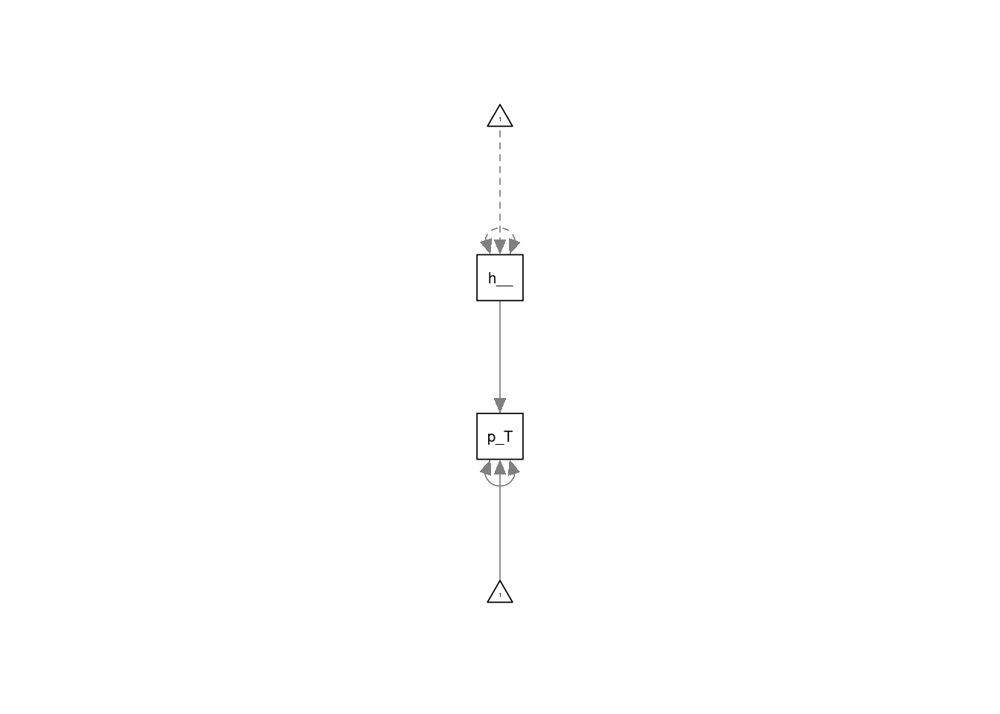
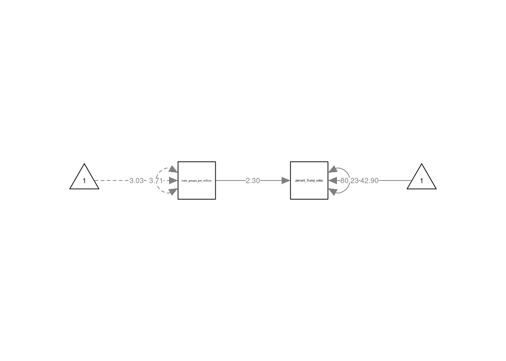
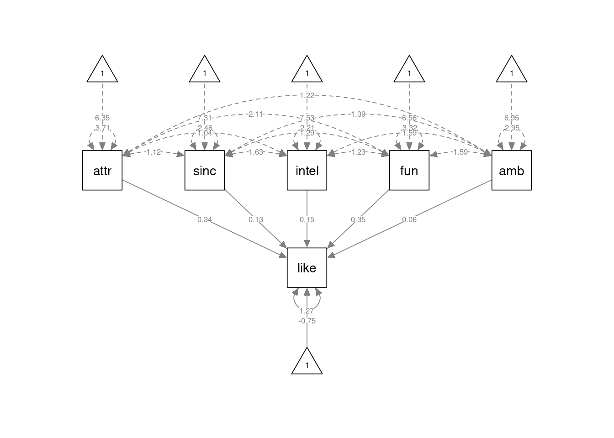
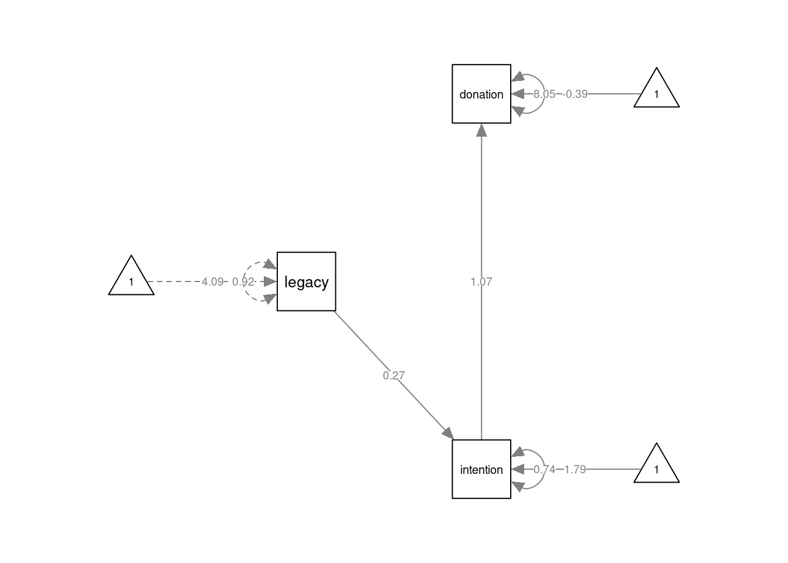
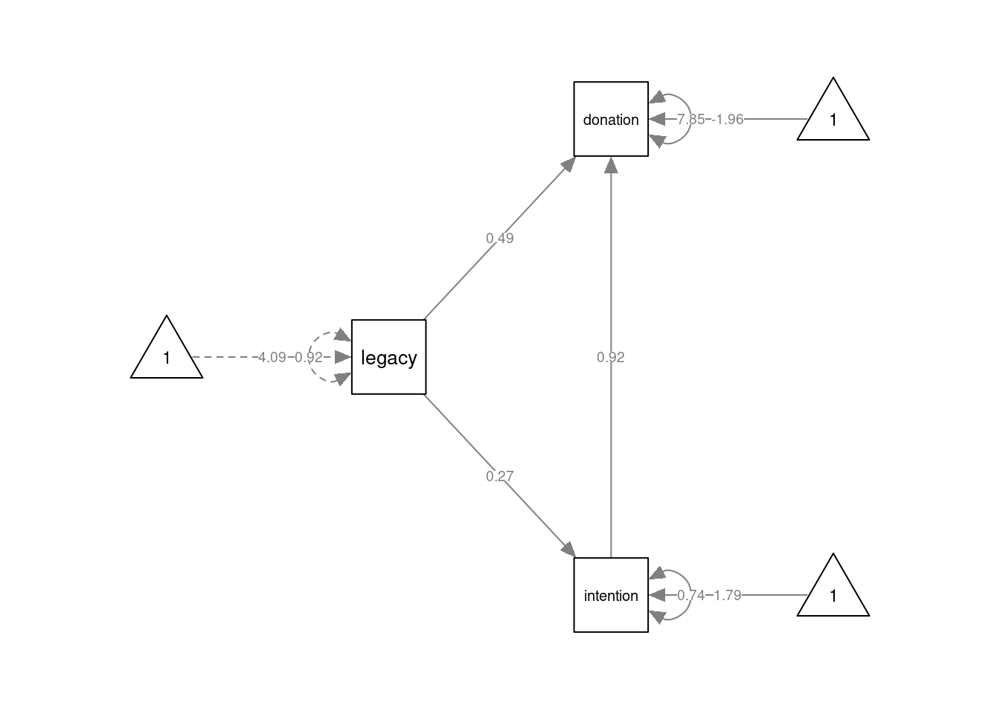
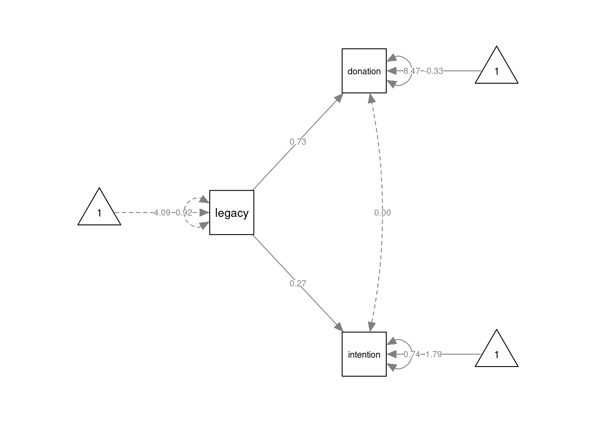
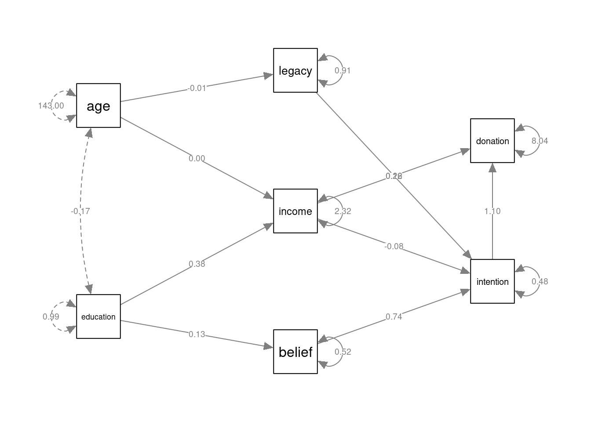

Chapter 11 Structural Equation modelling with lavaan
There are several packages for R which allow you to estimate Structural Equation Models (SEM), including sem (Fox, Nie, and Byrnes 2022), OpenMx (Boker et al. 2022), and lavaan (Rosseel, Jorgensen, and Rockwood 2022). Here, we will focus solely on lavaan.
11.1 Lavaan
The name “lavaan” stands for “latent variable analysis”. It is a package which can estimate a wide-variety of SEM models, including path models without latent variables. It has a convenient and intuitive syntax to define SEM models and it is actively developed. That is why it has perhaps become the go-to R package for SEM analysis. Although the help files in the R package are not overly comprehensive, the lavaan website has a useful tutorial, and I suggest you check this out.
11.1.1 The lavaan model syntax
In lavaan, SEM models can be specified via a formulation similar to the usual syntax for models in lm() and glm(). However, there are some new relational symbols used to define (residual) covariances, and latent variables.
| Formula | Description |
|---|---|
v =~ y |
latent variable v is defined and measured by y |
v =~ y1 + y2 + y3 |
latent variable v is defined and measured by y1, y2, and y3 |
v =~ 1 + y1 + y2 + y3 |
latent variable v is defined and measured by y1, y2, and y3, with the inclusion of an explicit intercept 1 to model the mean of v |
y ~ x |
y is regressed on x, i.e. a causal relation from x to y |
y ~ b*x |
y is regressed on x, with the slope of x labelled as b |
y ~ x1 + x2 + x3 |
y is regressed on x1, x2 and x3,i.e. causal relations from x1, x2, and x3 to y |
y ~ a*x1 + b*x2 + c*x3 |
regression with labelled slopes |
abc := a*b*c |
define a derived term abc as a function of the model parameters |
y1 ~~ y2 |
(residual) co-variance between y1 and y2 |
y1 ~~ 0*y2 |
fix the (residual) co-variance between y1 and y2 to 0 |
y ~~ y |
(residual) variance for y |
y ~~ 0*y |
fix the (residual) variance for y to 0 |
11.1.2 Model estimation
Under the hood, there is really only a single function used to define and estimate SEM models in the lavaan package, namely the lavaan::lavaan() function. But the lavaan package offers several wrappers around this function to make estimation of common SEM models more convenient. Amongst these are the lavaan::sem() function, and the lavaan::cfa() function.
11.1.3 Extracting results
Once a model is estimated, you can use the summary() function on the object returned to get the basic parameter estimates and tests. This function provides the most important results. You can additionally get some of the more widely used fit indices by setting the argument "fit.measures = TRUE". Other functions which can be called on a model fitted by lavaan are:
fitMeasures(): this function returns a long list of model fit measures, only some of which (the more important ones) were discussed in the SDAM bookfitted(): this function returns the model-implied variance-covariance matrix and mean vector.anova(): When provided with a single model, this function returns the results of a likelihood-ratio test of the model against the saturated model. When supplied with multiple models, the function returns likelihood-ratio tests comparing these. This assumes the models are nested!
11.2 Plotting SEM models with the semPlot package
The semPlot package (R-semPlot?) package provides a convenient way to plot SEM models fitted by lavaan. In principle, all that is needed to plot a lavaan-estimated object mod is a call to semPlot::semPaths(mod). However, the default settings don’t necessarily provide the best looking plots. But the semPlot package is very flexible, and by setting several arguments, it is possible to produce agreeable plots, although it will often require multiple attempts. Important arguments to the semPlot::semPaths() function are
object: for our purposes, this is the object returned bylavaanwhat: this allows you to change the appearance of the arrows based on the parameter estimates. The default ("path") just displays the arrows, but by setting this argument to"est"the linewidth of the arrows reflects the magnitude of the links. For more options, see?semPlot::semPath.whatLabels: This argument sets labels for the arrows. Some of the options are"name"(display the name of the link) and"est"(display the parameter estimates). For more options, see?semPlot::semPath.
11.3 Path models
Path models can be defined and estimated with the lavaan::sem() function. Important arguments for this function are:
model: Astringproviding the model descriptiondata: thedata.framein which all variables in the model description can be foundmeanstructure(passed onto thelavaanfunction): alogicalvalue (TRUEorFALSE) indicating whether the means of the variables should be estimated via intercept termsconditional.x(passed onto thelavaanfunction): alogicalvalue (TRUEorFALSE) indicating whether the model should just consider the conditional distribution of the endogenous variables, conditional upon the exogenous variables.fixed.x(passed onto thelavaanfunction): alogicalvalue (TRUEorFALSE) indicating whether the exogenous variables should be considered as fixed (TRUEby default).estimator(passed onto thelavaanfunction): astringwhich can be"ML"for maximum likelihood,"GLS"for (normal theory) generalized least squares,"WLS"for weighted least squares (sometimes called ADF estimation), or other values. See?lavOptionsfor other possibilities.
Usually, it is fine to stick to the defaults, and just specify the model and data arguments.
11.3.1 Regression models
A simple regression model can be estimated as follows:
# load the data
data("trump2016", package="sdamr")
# exclude the outlying Columbia state
dat <- subset(trump2016,state != "District of Columbia")
# specify the model in lavaan syntax
mod_spec <- 'percent_Trump_votes ~ 1 + hate_groups_per_million'
# estimate the model
library("lavaan")## This is lavaan 0.6-12
## lavaan is FREE software! Please report any bugs.fmod <- lavaan::sem(mod_spec, data=dat)We can then see the estimates and tests via the summary() function:
summary(fmod)## lavaan 0.6-12 ended normally after 11 iterations
##
## Estimator ML
## Optimization method NLMINB
## Number of model parameters 3
##
## Number of observations 50
##
## Model Test User Model:
##
## Test statistic 0.000
## Degrees of freedom 0
##
## Parameter Estimates:
##
## Standard errors Standard
## Information Expected
## Information saturated (h1) model Structured
##
## Regressions:
## Estimate Std.Err z-value P(>|z|)
## percent_Trump_votes ~
## ht_grps_pr_mll 2.300 0.658 3.496 0.000
##
## Intercepts:
## Estimate Std.Err z-value P(>|z|)
## .prcnt_Trmp_vts 42.897 2.361 18.171 0.000
##
## Variances:
## Estimate Std.Err z-value P(>|z|)
## .prcnt_Trmp_vts 80.228 16.046 5.000 0.000The output of the summary() function first provides information about the way the model was estimated (by maximum likelihood or "ML" by default). Next, under "Model Test User Model" you will find the results of a likelihood-ratio test comparing the model to a saturated model. This test was referred to as the “overall model fit” test in the SDAM book. After this come the parameter estimates, standard errors, and Wald tests. These are displayed in the following order: causal regression effects ("Regressions"), intercepts ("Intercepts"), and (residual) variances (“Variances").
If you want to plot the model, you can use the semPaths() function from the semPlot package:
library(semPlot)
semPlot::semPaths(fmod)
The default plot is quite basic and does not look so nice. In the following code, I set the arguments layout = tree2 and rotation = 2 to make the plot go from left to right, disable the automatic shortening of variable names by setting nCharNodes = 0, increase the size of the observed (or “manifest”) variables by setting sizeMan=7 and a relatively smaller size for the constant intercepts by setting sizeInt = 4. To display the estimated values as part of the arrows, I also set whatLabels = "est". There are many other tweaks possible, and it pays to play around with the semPaths() function to get the result you want. You should look at the ?semPaths help file to see all the options available. Note that it is useful to rename your variables before calling lavaan::sem() to get better names of the variables in semPlot(), as I will do in the next example.
semPlot::semPaths(fmod, layout="tree2", sizeMan=7, sizeInt = 4, normalize=FALSE,
whatLabels="est", width=4, height=1, rotation=2, nCharNodes = 0)
The multiple regression model discussed in the SDAM book is defined in lavaan syntax as
like ~ 1 + attr + sinc + intel + fun + amb
This specifies that like is predicted by (observed) variables attr, sinc, intel, fun, and amb. We also include and intercept via the 1 term in the formula. The model can be specified and estimated as follows:
# load the data
data("speeddate", package="sdamr")
dat <- speeddate
# the following lines are just to get shorter names for the variables
# this is usefull for semPlot. There are better ways to do this though.
dat$like <- dat$other_like
dat$attr <- dat$other_attr
dat$sinc <- dat$other_sinc
dat$intel <- dat$other_intel
dat$fun <- dat$other_fun
dat$amb <- dat$other_amb
# the lavaan model specification
mod_spec <- 'like ~ 1 + attr + sinc + intel + fun + amb'
# estimate the model
fmod <- lavaan::sem(mod_spec, data=dat)The results can again be obtained with the summary() function. Here we will supply the additional "fit.measures = TRUE" argument to get additional measures of model fit:
# get the results
summary(fmod, fit.measures=TRUE)## lavaan 0.6-12 ended normally after 17 iterations
##
## Estimator ML
## Optimization method NLMINB
## Number of model parameters 7
##
## Used Total
## Number of observations 1389 1562
##
## Model Test User Model:
##
## Test statistic 0.000
## Degrees of freedom 0
##
## Model Test Baseline Model:
##
## Test statistic 1367.918
## Degrees of freedom 5
## P-value 0.000
##
## User Model versus Baseline Model:
##
## Comparative Fit Index (CFI) 1.000
## Tucker-Lewis Index (TLI) 1.000
##
## Loglikelihood and Information Criteria:
##
## Loglikelihood user model (H0) -2138.891
## Loglikelihood unrestricted model (H1) -2138.891
##
## Akaike (AIC) 4291.783
## Bayesian (BIC) 4328.437
## Sample-size adjusted Bayesian (BIC) 4306.201
##
## Root Mean Square Error of Approximation:
##
## RMSEA 0.000
## 90 Percent confidence interval - lower 0.000
## 90 Percent confidence interval - upper 0.000
## P-value RMSEA <= 0.05 NA
##
## Standardized Root Mean Square Residual:
##
## SRMR 0.000
##
## Parameter Estimates:
##
## Standard errors Standard
## Information Expected
## Information saturated (h1) model Structured
##
## Regressions:
## Estimate Std.Err z-value P(>|z|)
## like ~
## attr 0.338 0.020 17.007 0.000
## sinc 0.134 0.028 4.826 0.000
## intel 0.146 0.032 4.617 0.000
## fun 0.353 0.023 15.445 0.000
## amb 0.063 0.024 2.621 0.009
##
## Intercepts:
## Estimate Std.Err z-value P(>|z|)
## .like -0.753 0.170 -4.428 0.000
##
## Variances:
## Estimate Std.Err z-value P(>|z|)
## .like 1.274 0.048 26.353 0.000Compared to the usual output, we now also get a likelihood-ratio test against a baseline model ("Model Test Baseline Model"), two fit indices (the CFI and TLI, the latter of which was discussed in the SDAM book), then the AIC and BIC measures, and then two other measures of model fit (the RMSEA and SRMR).
As before, we can get a graphical depiction of the model by using the semPaths() function from the semPlot package. In the code below, I’m additionally setting the argument curvature=3 to make the arrows for the covariances between the exogenous predictors more spread out and easier to see:
semPlot::semPaths(fmod, layout="tree", sizeMan=7, sizeInt = 4, style="ram",
residuals=TRUE, rotation=1, intAtSide = FALSE,
whatLabels = "est", nCharNodes = 0, curvature=3)
11.3.2 Mediation models
The mediation models concerned the legacy2015 data in the sdamr package, which we should load first:
data("legacy2015", package="sdamr")
dat <- legacy2015 The Full Mediation model for the relation between legacy motive, intention, and donation, is specified through separate formulas for intention and donation, which are on separate lines of the string that will be supplied to lavaan. We can also explicitly label the regression parameters, which will allow us to compute the indirect effect of legacy on donation
mod1 <- '
intention ~ 1 + a*legacy
donation ~ 1 + b*intention
ab := a*b # indirect effect of legacy on donation
'Here, we have specified that intention is caused by legacy, and donation by intention. We have also included an intercept for both endogenous variables. The model can be estimated as usual:
fmod1 <- lavaan::sem(mod1, data=dat)The results are:
summary(fmod1, fit.measures=TRUE)## lavaan 0.6-12 ended normally after 20 iterations
##
## Estimator ML
## Optimization method NLMINB
## Number of model parameters 6
##
## Number of observations 237
##
## Model Test User Model:
##
## Test statistic 5.989
## Degrees of freedom 1
## P-value (Chi-square) 0.014
##
## Model Test Baseline Model:
##
## Test statistic 51.556
## Degrees of freedom 3
## P-value 0.000
##
## User Model versus Baseline Model:
##
## Comparative Fit Index (CFI) 0.897
## Tucker-Lewis Index (TLI) 0.692
##
## Loglikelihood and Information Criteria:
##
## Loglikelihood user model (H0) -883.794
## Loglikelihood unrestricted model (H1) -880.800
##
## Akaike (AIC) 1779.588
## Bayesian (BIC) 1800.397
## Sample-size adjusted Bayesian (BIC) 1781.379
##
## Root Mean Square Error of Approximation:
##
## RMSEA 0.145
## 90 Percent confidence interval - lower 0.052
## 90 Percent confidence interval - upper 0.266
## P-value RMSEA <= 0.05 0.047
##
## Standardized Root Mean Square Residual:
##
## SRMR 0.048
##
## Parameter Estimates:
##
## Standard errors Standard
## Information Expected
## Information saturated (h1) model Structured
##
## Regressions:
## Estimate Std.Err z-value P(>|z|)
## intention ~
## legacy (a) 0.267 0.058 4.580 0.000
## donation ~
## intention (b) 1.065 0.205 5.185 0.000
##
## Intercepts:
## Estimate Std.Err z-value P(>|z|)
## .intention 1.785 0.245 7.284 0.000
## .donation -0.391 0.619 -0.632 0.528
##
## Variances:
## Estimate Std.Err z-value P(>|z|)
## .intention 0.739 0.068 10.886 0.000
## .donation 8.047 0.739 10.886 0.000
##
## Defined Parameters:
## Estimate Std.Err z-value P(>|z|)
## ab 0.285 0.083 3.433 0.001As we have defined a new parameter for the indirect effect of legacy on donation, the results also show the estimate of this new parameter under "Defined Parameters", named ab. We even get a Wald test for the null-hypothesis that the indirect effect is equal to 0 (i.e. no mediation), which is rejected.
A longer list of fit indices can also be obtained via
fitMeasures(fmod1)## npar fmin chisq df
## 6.000 0.013 5.989 1.000
## pvalue baseline.chisq baseline.df baseline.pvalue
## 0.014 51.556 3.000 0.000
## cfi tli nnfi rfi
## 0.897 0.692 0.692 0.652
## nfi pnfi ifi rni
## 0.884 0.295 0.901 0.897
## logl unrestricted.logl aic bic
## -883.794 -880.800 1779.588 1800.397
## ntotal bic2 rmsea rmsea.ci.lower
## 237.000 1781.379 0.145 0.052
## rmsea.ci.upper rmsea.pvalue rmr rmr_nomean
## 0.266 0.047 0.137 0.168
## srmr srmr_bentler srmr_bentler_nomean crmr
## 0.048 0.048 0.059 0.059
## crmr_nomean srmr_mplus srmr_mplus_nomean cn_05
## 0.083 0.048 0.059 153.018
## cn_01 gfi agfi pgfi
## 263.563 0.998 0.982 0.111
## mfi ecvi
## 0.990 0.076although this is not as nicely presented as in summary(..., fit.measures=TRUE).
A graphical depiction of the model is obtained as:
semPlot::semPaths(fmod1, layout="tree", sizeMan=7, sizeInt = 4, style="ram",
residuals=TRUE, rotation=2, intAtSide = FALSE,
whatLabels = "est", nCharNodes = 0, normalize = FALSE)
Note I am setting the argument "intAtSide = FALSE" to create a better looking plot. You can compare the result with setting "intAtSide = TRUE" to see the effect of this setting.
The Partial Mediation model is specified again by separate formulas for intention and donation, but now we include two predictors for donation:
mod2 <- '
intention ~ 1 + a*legacy
donation ~ 1 + b*intention + c*legacy
ab := a*b
'
fmod2 <- lavaan::sem(mod2, data=dat)
summary(fmod2, fit.measures=TRUE)## lavaan 0.6-12 ended normally after 24 iterations
##
## Estimator ML
## Optimization method NLMINB
## Number of model parameters 7
##
## Number of observations 237
##
## Model Test User Model:
##
## Test statistic 0.000
## Degrees of freedom 0
##
## Model Test Baseline Model:
##
## Test statistic 51.556
## Degrees of freedom 3
## P-value 0.000
##
## User Model versus Baseline Model:
##
## Comparative Fit Index (CFI) 1.000
## Tucker-Lewis Index (TLI) 1.000
##
## Loglikelihood and Information Criteria:
##
## Loglikelihood user model (H0) -880.800
## Loglikelihood unrestricted model (H1) -880.800
##
## Akaike (AIC) 1775.599
## Bayesian (BIC) 1799.876
## Sample-size adjusted Bayesian (BIC) 1777.688
##
## Root Mean Square Error of Approximation:
##
## RMSEA 0.000
## 90 Percent confidence interval - lower 0.000
## 90 Percent confidence interval - upper 0.000
## P-value RMSEA <= 0.05 NA
##
## Standardized Root Mean Square Residual:
##
## SRMR 0.000
##
## Parameter Estimates:
##
## Standard errors Standard
## Information Expected
## Information saturated (h1) model Structured
##
## Regressions:
## Estimate Std.Err z-value P(>|z|)
## intention ~
## legacy (a) 0.267 0.058 4.580 0.000
## donation ~
## intention (b) 0.917 0.212 4.331 0.000
## legacy (c) 0.488 0.198 2.463 0.014
##
## Intercepts:
## Estimate Std.Err z-value P(>|z|)
## .intention 1.785 0.245 7.284 0.000
## .donation -1.961 0.884 -2.220 0.026
##
## Variances:
## Estimate Std.Err z-value P(>|z|)
## .intention 0.739 0.068 10.886 0.000
## .donation 7.846 0.721 10.886 0.000
##
## Defined Parameters:
## Estimate Std.Err z-value P(>|z|)
## ab 0.245 0.078 3.147 0.002semPlot::semPaths(fmod2, layout="tree", sizeMan=7, sizeInt = 5, style="ram",
residuals=TRUE, rotation=2, intAtSide = FALSE, whatLabels = "est",
nCharNodes = 0, normalize=FALSE)
Finally, the Common Cause model can be specified by three formulas. The first two lines concern the regression equations. The third line (donation ~~ 0*intention) specifies that the (residual) covariance between donation and intention should be fixed to 0.
mod3 <- '
intention ~ 1 + legacy
donation ~ 1 + legacy
donation ~~ 0*intention
'
fmod3 <- lavaan::sem(mod3, data=dat)
summary(fmod3, fit.measures=TRUE)## lavaan 0.6-12 ended normally after 20 iterations
##
## Estimator ML
## Optimization method NLMINB
## Number of model parameters 6
##
## Number of observations 237
##
## Model Test User Model:
##
## Test statistic 18.048
## Degrees of freedom 1
## P-value (Chi-square) 0.000
##
## Model Test Baseline Model:
##
## Test statistic 51.556
## Degrees of freedom 3
## P-value 0.000
##
## User Model versus Baseline Model:
##
## Comparative Fit Index (CFI) 0.649
## Tucker-Lewis Index (TLI) -0.053
##
## Loglikelihood and Information Criteria:
##
## Loglikelihood user model (H0) -889.824
## Loglikelihood unrestricted model (H1) -880.800
##
## Akaike (AIC) 1791.648
## Bayesian (BIC) 1812.456
## Sample-size adjusted Bayesian (BIC) 1793.438
##
## Root Mean Square Error of Approximation:
##
## RMSEA 0.268
## 90 Percent confidence interval - lower 0.169
## 90 Percent confidence interval - upper 0.383
## P-value RMSEA <= 0.05 0.000
##
## Standardized Root Mean Square Residual:
##
## SRMR 0.084
##
## Parameter Estimates:
##
## Standard errors Standard
## Information Expected
## Information saturated (h1) model Structured
##
## Regressions:
## Estimate Std.Err z-value P(>|z|)
## intention ~
## legacy 0.267 0.058 4.580 0.000
## donation ~
## legacy 0.733 0.197 3.714 0.000
##
## Covariances:
## Estimate Std.Err z-value P(>|z|)
## .intention ~~
## .donation 0.000
##
## Intercepts:
## Estimate Std.Err z-value P(>|z|)
## .intention 1.785 0.245 7.284 0.000
## .donation -0.325 0.830 -0.392 0.695
##
## Variances:
## Estimate Std.Err z-value P(>|z|)
## .intention 0.739 0.068 10.886 0.000
## .donation 8.467 0.778 10.886 0.000semPlot::semPaths(fmod3, layout="tree", sizeMan=7, sizeInt = 5, style="ram",
residuals=TRUE, rotation=2, intAtSide = FALSE,
whatLabels = "est", nCharNodes = 0, normalize=FALSE)
We can obtain likelihood-ratio tests for nested models with the anova() function. For sample, we can compare the Full Mediation model to the Partial Mediation model with:
anova(fmod1, fmod2)## Chi-Squared Difference Test
##
## Df AIC BIC Chisq Chisq diff Df diff Pr(>Chisq)
## fmod2 0 1775.6 1799.9 0.0000
## fmod1 1 1779.6 1800.4 5.9889 5.9889 1 0.0144 *
## ---
## Signif. codes: 0 '***' 0.001 '**' 0.01 '*' 0.05 '.' 0.1 ' ' 1And we can compare the Common Cause model to the Partial Mediation model with:
anova(fmod3, fmod2)## Chi-Squared Difference Test
##
## Df AIC BIC Chisq Chisq diff Df diff Pr(>Chisq)
## fmod2 0 1775.6 1799.9 0.000
## fmod3 1 1791.7 1812.5 18.048 18.048 1 2.154e-05 ***
## ---
## Signif. codes: 0 '***' 0.001 '**' 0.01 '*' 0.05 '.' 0.1 ' ' 1As the Partial Mediation model is saturated, these tests are equivalent to the model fit tests reported by the summary() function for fmod1 and fmod3.
11.3.3 A more complex path model
More complex path models can be estimated by including more formula’s in the model specification. For example:
mod_complex <- '
belief ~ 1 + education
legacy ~ 1 + age
income ~ 1 + age + education
intention ~ 1 + belief + legacy + income
donation ~ 1 + intention + income
'
fmod_complex <- lavaan::sem(mod_complex, data=legacy2015)
summary(fmod_complex)## lavaan 0.6-12 ended normally after 43 iterations
##
## Estimator ML
## Optimization method NLMINB
## Number of model parameters 19
##
## Used Total
## Number of observations 224 237
##
## Model Test User Model:
##
## Test statistic 41.291
## Degrees of freedom 11
## P-value (Chi-square) 0.000
##
## Parameter Estimates:
##
## Standard errors Standard
## Information Expected
## Information saturated (h1) model Structured
##
## Regressions:
## Estimate Std.Err z-value P(>|z|)
## belief ~
## education 0.132 0.048 2.723 0.006
## legacy ~
## age -0.006 0.005 -1.120 0.263
## income ~
## age 0.002 0.009 0.254 0.800
## education 0.384 0.102 3.757 0.000
## intention ~
## belief 0.738 0.064 11.615 0.000
## legacy 0.123 0.049 2.522 0.012
## income -0.080 0.030 -2.710 0.007
## donation ~
## intention 1.098 0.213 5.152 0.000
## income 0.257 0.121 2.113 0.035
##
## Intercepts:
## Estimate Std.Err z-value P(>|z|)
## .belief 4.416 0.222 19.912 0.000
## .legacy 4.322 0.208 20.773 0.000
## .income 1.220 0.569 2.143 0.032
## .intention -1.077 0.386 -2.790 0.005
## .donation -1.232 0.774 -1.592 0.111
##
## Variances:
## Estimate Std.Err z-value P(>|z|)
## .belief 0.520 0.049 10.583 0.000
## .legacy 0.906 0.086 10.583 0.000
## .income 2.318 0.219 10.583 0.000
## .intention 0.485 0.046 10.583 0.000
## .donation 8.039 0.760 10.583 0.000To plot complex models like this, it may be useful to hide the constant (intercept) terms, which is achieved by setting "intercepts" = FALSE in the call to semPlot::semPaths():
semPlot::semPaths(fmod_complex, layout="tree2", sizeMan=7, sizeInt = 5,
style="ram", intercepts=FALSE, residuals=TRUE, rotation=2,
intAtSide = FALSE, whatLabels = "est", nCharNodes = 0,
normalize=FALSE)